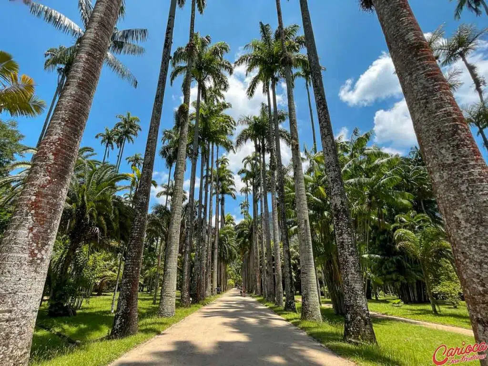

Rio de Janeiro, uma das cidades mais famosas do Brasil, é conhecido por suas belas praias, paisagens deslumbrantes, cultura vibrante e festivais animados. Aqui estão alguns dos principais pontos turísticos do Rio de Janeiro:
Bem-vindo ao Rio Janeiro

Cristo Redentor: Um dos ícones mais famosos do Brasil, o Cristo Redentor é uma estátua imponente localizada no topo do Corcovado. Oferece uma vista panorâmica incrível da cidade.

Pão de Açúcar: Outro cartão-postal do Rio de Janeiro, o Pão de Açúcar é uma montanha localizada na Baía de Guanabara. É possível chegar ao topo utilizando o bondinho e desfrutar de uma vista espetacular da cidade, das praias e do mar.

Copacabana e Ipanema: Duas das praias mais famosas do mundo, Copacabana e Ipanema atraem turistas de todo o mundo. As praias são conhecidas por sua beleza natural, areia branca e ondas propícias para o surf.

Jardim Botânico: Um oásis verde no coração da cidade, o Jardim Botânico é um parque repleto de plantas exóticas, árvores centenárias e jardins bem cuidados. É um local tranquilo para caminhar e apreciar a natureza.